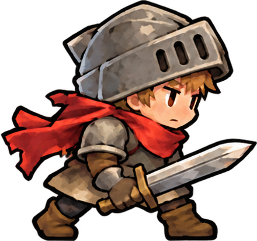
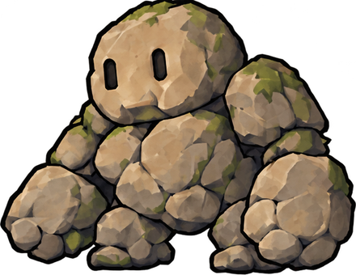

PLAYABLE STUDY · 01
한 수를 준비하고,
라인으로 공격하세요.
우리가 고른 그림으로 만든 작은 실험장.
직접 움직여 보고, 가장 재미있는 규칙을 찾습니다.
✦
행·열 밀기
한 줄을 밀어 판 전체의 흐름을 바꿉니다.
이번 실험의 규칙
5개 이상 직선은 강한 라인 공격.
3~4개 직선은 짧은 공격과 판 정리.
3개 직선부터 인접한 같은 색도 함께 터집니다.
준비 중에는 블록이 터지지 않아요.
리더 변환과 색칠로 첫 공격을 설계해 보세요.
ART DIRECTION
은은한 붓터치 · 반투명 조약돌 · 작은 원정대
CH. 1 속삭임의 숲
준비15.0
숲의 수호자 Lv. 1
22,000 / 22,000


판을 준비해 주세요
색칠 3
0 COMBO0 COMBO5콤보 → FEVER ×20점
실시간 플레이